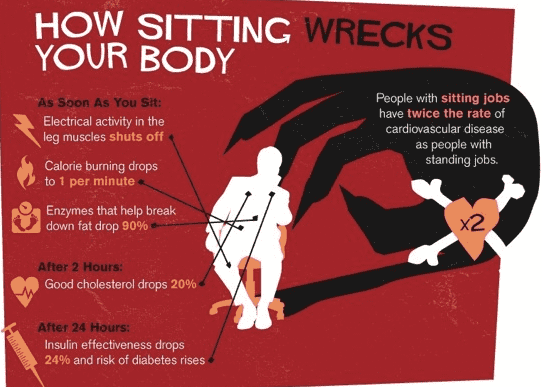
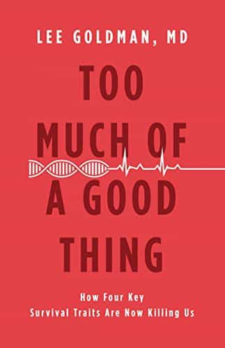

is an aspiring philosopher king, living the dream, travelling the world, hoarding FRNs and ignoring Americunts. He is a European at heart, lover of Latinas, and currently residing in the USA.


The first signs of Homo sapiens date back to 200,000 years ago in Africa. This prehistoric man is called “anatomic homo sapien” because the skeletal structure appears similar to modern man, although the behaviors, actions, and socialization of this creature are far different than modern society, and it is only the modern homo sapien, who appeared around 10,000 to 12,000 years ago, that we would likely recognize as human. It was at this time when man began to farm and herd animals, spread out across the planet, form permanent towns and cities, and develop a civilization.
The history of man is typically divided into prehistoric (before written history, other than symbols or glyphs), Antiquity (776 BC-476 AD), the Middle Ages (5th-15th century), Renaissance and Age of Enlightenment (15th-18th century), the Industrial Revolution (1760-1840), and modern history. It is only in the era of modern history that the changes have outpaced nature’s ability to adapt.
For the first 5,000 to 10,000 generations, what didn’t kill us made us stronger, and our bodies slowly changed and adapted. Humans who traveled far from Africa to northern climates developed lighter pigmented skin that was more sensitive to the light, which was far scarcer than down near the equator in the fertile crescent. Societies that ate a diet strong in fish slowly changed in other subtle ways.
But since the Industrial Revolution, our bodies have been introduced, over less than 200 years, in a mere half dozen generations, to things never seen or experienced by the human body, like electricity, vehicular transportation, processed foods, and chemical medicine. Our bodies are not able to react to these rapidly introduced changes, which drastically alter our way of life.
Is this really any way to live?
Consider, for example, how a mere 50 years ago, only 12% of houses in America had air conditioning, and it wasn’t until 1980 when the figure crept up above half. Today, I cannot imagine living without air conditioning. Indeed, I often ponder on a particularly hot and humid day, how my ancestors were able to do anything other than sit in the shade and suffer. And yet, they were able to not only live, but work, function, and survive.
Our bodies are less able to tolerate changes in heat when we live year in and year out at a constant temperature. I try to keep my house slightly warm in summer and somewhat cool in winter, so that my body recognizes that I am living in a different season, and I maintain some ability to tolerate extremes in temperature.
Maybe men shouldn’t have invented sexist A/C in the first place?
One of the most dangerous things one can do is work the typical corporate job, sitting in a climate controlled office and staring at a computer screen for 8 hours a day tapping your index finger over a mouse button. So dangerous, in fact, that sitting for eight hours a day has been attributed to increasing the risk of premature death by 60%, increasing the risk of cancer by up to 66%, increasing the risk of heart attack by 54%, and leading to obesity.

Recent studies examined more than a million subjects, and concluded that one hour a day of exercise was needed to counteract eight hours of sitting at a desk. That’s a far more robust exercise schedule than all but the hardcore gym rats.
One of the riskiest jobs out there
If you must work in an office cubicle, consider getting up and walking around for five minutes every hour, taking regular breaks, stretching your body, and moving your eyes. I recently began using a standing desk, a desk platform which can be raised or lowered, allowing one to work standing or sitting, and therefore not statically working in the same position for hours at a time.

And sitting down is only one small minor change that has been studied. Consider what staring at a fixed electronic screen a few inches from your eyes does to your vision, which was designed to constantly scan the horizon for food or enemies. The eye was developed with the ability to change focus rapidly, but what happens when we focus on the same plane for hours at a time?

Likewise our bodies are not adjusted to ingesting contaminants produced from burning fossil fuels, chemical treatments used in mass produced products, and hormones and chemicals added to food produced in factory farms. All of these changes were introduced within the past 200 years, and with insufficient time to respond biologically, our bodies often shut down, become addicted, or develop mental illness or bodily disease (The rash of degenerate sexuality is certainly related to our abnormal lifestyles).

As author Leo Goldman states in his book Too Much of a Good Thing, these rapid changes have caused four major outcomes: obesity, high blood pressure, depression or anxiety, and heart disease, which are causing 40% of deaths. Goldman states that our bodies are well designed to survive and adapt in the paleolithic age, doing things such as storing fat in order to prevent starvation, but we no longer live in that environment, and our genes have not had time to adapt to these modern changes.
One reason dieting rarely works is because the body responds in defensive ways when insufficient calories are consumed—your metabolism will actually slow down, conserving energy until a new food source is found, because your body is preventing you from starving to death. Today, 2/3 of the population in the west is overweight, and 1/3 is obese. Food is plentiful and available, but in altered forms (low-fat or no fat foods are laden with sugars and chemicals, to replace the flavor that was lost by removing the fat).
There’s a reason he is 101 and counting.. and it’s not because he’s reptilian
Steve Jobs became a billionaire with the Iphone, but he did not allow his children to use it. Elitists Bill Gates and centenarian David Rockefeller (who recently admitted to being part of a secret globalist cabal, of which he proudly stands guilty as charged) eat strict diets free from GMO food. The elitists all have multiple homes, often in warm island environments near the sea. Meanwhile, the hordes of useless eaters are expected to live in compact, unnatural urban environments, where we are more susceptible to disease, crime, mental illness, stress, and dehumanization.
Indeed, feminism is a reaction, albeit misguided, to the abnormal environment women have been placed in, which is far from their natural role as nurturing mothers. If you are choosing a career, consider an independent job outside an office. The few red pill friends I have are electricians, plumbers, and the self employed. If you are working in an office, take steps to preserve your health, and make sure you get away on vacation to experience nature, and naturally feminine women.
Take whatever steps you can to reverse the stress, disease, and death that comes with living in the Matrix. Life is short. Enjoy it.
Read More: The Theory of Evolution Does Not Apply to Modern Human Beings